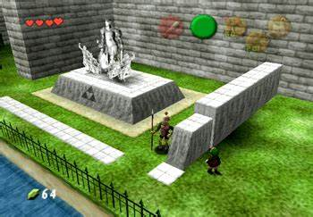
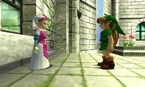
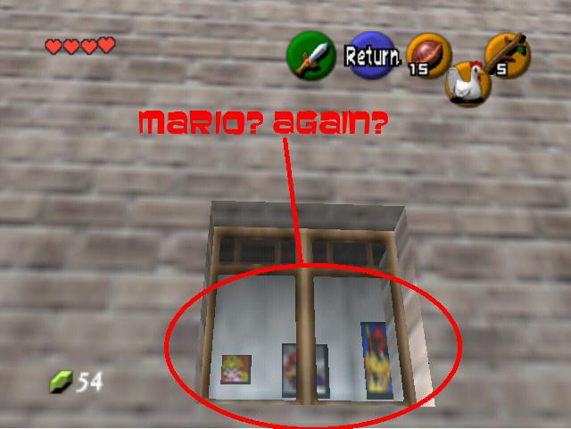

About
|
Contact
Mario Easter Egg
Step 1 - Sneak Past Guards at Hyrule Castle

Step 2 - Make it to the hidden garden with Zelda

Step 3 - Look through the windows on the right to see pictures of Mario, Luigi, Bowser, Yoshi and Peach!
